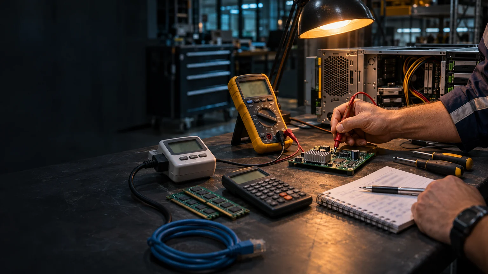

Find a useful source
Practise checking who issued a notice, its date, audience and next action.
Explore →
A 24/7 civic establishment
Develop preparedness, volunteer learning and continuity through familiar places and maintained relationships.
Working exploration · Brisbane · 7 November 2026
An imagined practical workspace for checking claims against measurements. AI-generated concept image.
Image credit ↗Everyday usefulness
A space people use for ordinary learning and community life can also support preparedness, volunteer development and rehearsal.
The disaster-resilience proposal connects public information, personal support, maintained kiosks, practical learning and a visible next owner for a help request. A shared hub can host selected demonstrations and coordination work around those functions.
The local brief identifies the responsible organisations, actual receiving services and what the building is being asked to provide. Those relationships give an exercise or service a practical home.

A complete experience to rehearse
Practise checking who issued a notice, its date, audience and next action.
Explore →Distinguish local saving, delivery, acceptance, allocation and a recorded outcome.
Explore →Rehearse a lost connection, a relief handover, waiting work and restoration.
Explore →Volunteering and support
A participant might help explain information, prepare accessible material, look after equipment, organise a gathering or support a community project. The host connects that willingness with a task, support and a route for questions.
Volunteering Queensland’s Volunteer Management Activity supports volunteer-involving organisations. Its EV Crew programme connects councils and community organisations with people offering disaster-recovery help.
C-Hour can recognise verified voluntary human time, with locally chosen reciprocity. The programme’s money account pays for staff, equipment and operations; its outcome record describes what the work achieved.
A place-specific role
| Possible contribution | What makes the role concrete |
|---|---|
| A demonstration and exercise centre | Named hosts, sample messages, a chosen scenario, a controller and recorded observations. |
| Volunteer learning and coordination | Actual roles, support, availability, expenses and handover arrangements. |
| A kiosk and continuity-kit workshop | Equipment inventory, maintenance, measured power demand and restoration practice. |
| Community recovery activity | An agreed service purpose, responsible provider, location and continuing support. |
Designation as an evacuation centre or emergency facility is a separate site and operating decision. This exploration currently describes learning, readiness and selected community-support functions.
Aura Disaster Resilience planning workshop · Brisbane Local Disaster Management Plan.